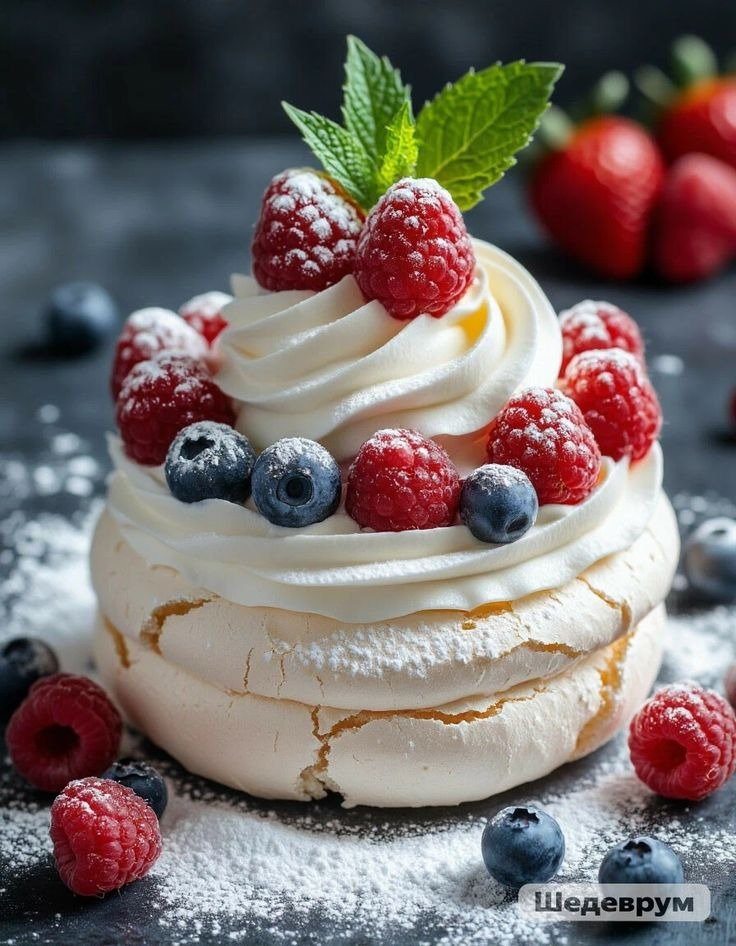

La tarta pavlova es una tarta de base de merengue
y frutos rojos de origen neozelandés.
Es un postre muy conocido en Australia y en toda
la zona de Oceanía.
El origen de esta tarta es curioso,
se dice que la bailarina rusa Anna Pavlova visto
Nueva Zelanda y en su honor crearon esta deliciosa tarta.

2 Horas
Para 6 porciones
Nivel Medio